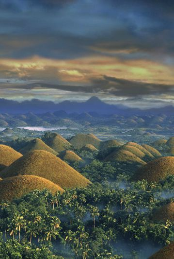
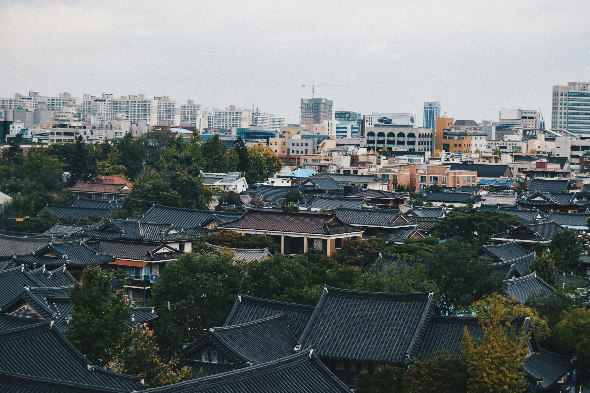
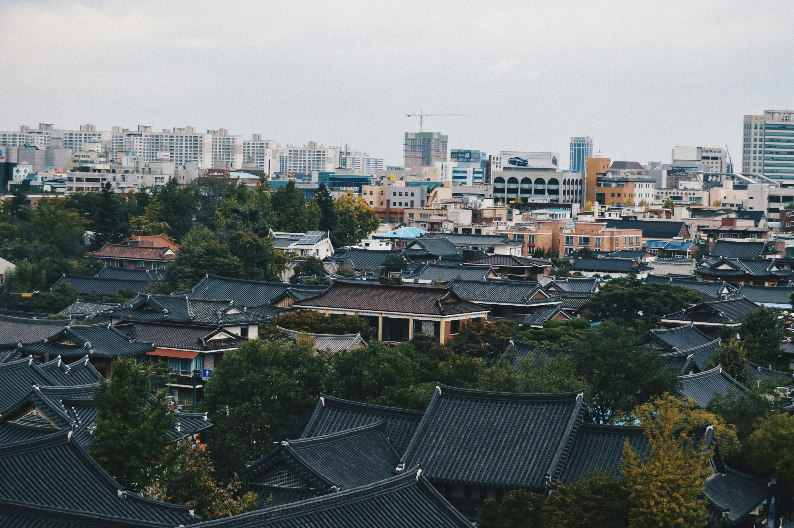
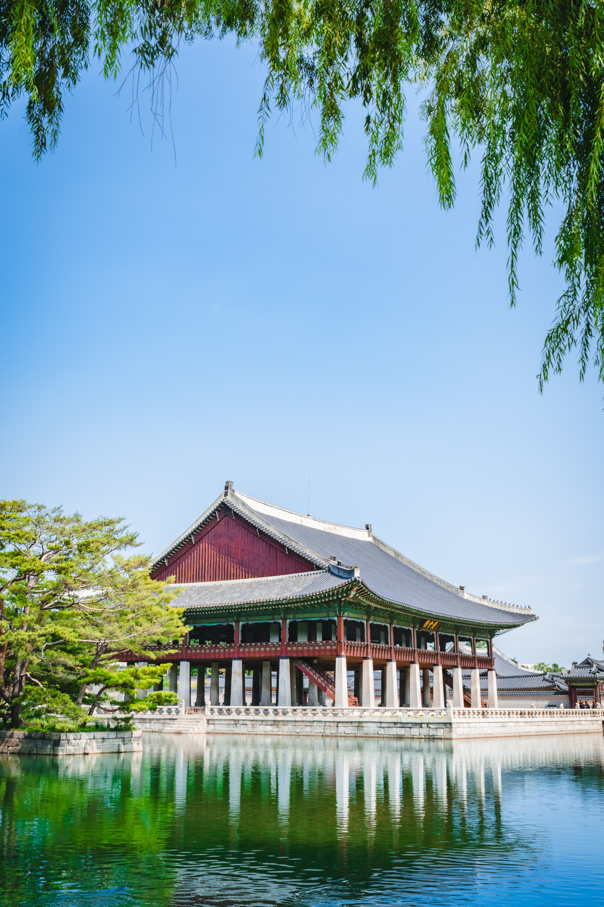
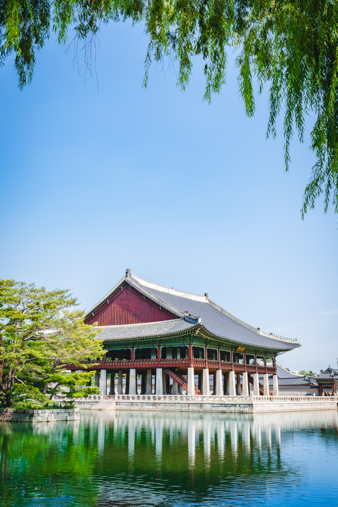

Keep Calm and Travel to

- PHILIPPINES
- Calle Crisologo

Though only 500 meters long, Calle Crisologo in Vigan, Ilocos Sur, is one of the most beautiful streets in the Philippines. It boasts centuries-old stone houses, lovely tungsten lamps, and antique cobblestone, where horse-drawn carriages or kalesas are still used for transport.
In fact, the street is a pedestrian-only zone, save for kalesas favored for touring the historical sites around town.
A few of the ancestral houses have also become restaurants that serve the famous Ilocos bagnet (deep fried pork belly) or empanadas.
Meanwhile, others have been converted into inns and souvenir shops for traditional Inabel linen.
Learn more
- Boracay
Boracay may be a small island, but it packs great features such as award-winning beaches, beautiful resorts and great adventures like cliff diving, parasailing, motorbiking, horse riding, snorkeling, kite surfing and scuba diving. If that is not enough, boat tours allow visitors to watch stunning sunsets, explore volcanic caves and remote coves of turquoise lagoons. When the sun sets, Boracay night-life pulsates with many bars and restaurants serving food, drinks and fun until dawn.


Learn more
- Chocolate Hills

One of the top tourist attractions in the Philippines, The Chocolate Hills are unusual geological formations that consists of at least 1,268 individual mounds scattered throughout the interior of the island of Bohol. The almost symmetrical and same-sized formations range from 98 to 164 feet (30 to 50 meters) high and are covered in green grass. During the dry season the grass turns brow, hence the name. There is no consensus on how these giant mole hills were formed. One theory holds that the Chocolate Hills are the weathered rock formations of a kind of marine limestone on top of an impermeable layer of clay.


Learn more
- SOUTH KOREA
- Nami Island

No matter the season, Nami Island is a beautiful destination to visit all year round. Known for appearing in many Korean dramas,
the island has numerous lanes lined with pine trees, gingko trees, redwood giants and more. Take a scenic walk along the wooden riverside path and
snap a photo with the Winter Sonata statue in Gongsaengwon Garden.


Learn more
- Jeonju Hanok Village
The roads of Jeonju Hanok Village are lined with street-food vendors and restaurants carrying dishes that are traditional to Jeonju. One such dish is Jeonju bibimbay; it was considered a royal dish during the Jeonju dynasty.
Besides the culinary aspects, the town is famous for its many hanoks: traditional Korean houses which pay considerable attention to the positioning of the house. The ideal hanok would feature a mountain in the back and a river out front. They typically utilize a courtyard to retain heat within the house, especially the floor, since Koreans traditionally sit on the floor to eat and entertain.

 

Learn more
- Gyeongbokgung Palace

Located in the heart of Seoul, Gyeongbokgung Palace is one of South Korea’s most iconic buildings. The incredible palace finished construction in 1395. However, over the years, various other rooms and structures were added to this incredible building.
The two museums that reside within the palace walls include the Museum of Korea and the National Palace Museum of Korea. There are still a number of ongoing restoration efforts aimed at restoring this fabulous building back to the epitome of its former glory.
 

Learn more
- CHINA
- Great Wall of China

The magnificent and spectacular view of "The Great Wall of China". No visitor to Beijing leaves without at least a quick trip to the Great Wall. Great Wall also called by the name of the "Long City" is the mother of all of China’s tourist attractions. It is believe that Great Wall of China is the only man made structure can be seen from the space.
Great Wall is of the the "Seven Wonders" of the world and it is a "World Heritage Site". It is believe that several walls were being built as early as the 7th century BC and these walls, later joined together after China’s warring states unified under the rule of Emperor Qin.
Great Wall is made up of 6,259 km long spanning from Shanhaiguan in the east, to Lop Lake in the west is still standing tall in the modern time and is the proud of Chinese people. The distance of Great Wall almost covered half of the Earth's equatorial diameter. It is an incredible feat of engineering of China and the greatest hand made building structure may ever build by mankind in ancient time.
That's why this made Great Wall is a greatest ancient tourist attraction and will continue to provide breathtaking view and awesome sceneries all round the seasons.


Learn more
- Victoria Harbour

The world’s third largest seaport, Victoria Harbour, is beyond a hub of activity. It encapsulates the organized chaos of Hong Kong, where much is occurring, but nothing misses a beat.
The natural harbor sprawls out into the distance. Tanker ships come and go with the speed of little fishing boats jetting out from tiny villages. As much as you want to sit still, you never can. That’s because there’s always a better view to be had.
Come nightfall, you’ll become captivated and inspired by the smorgasbord of lights taking up the skyline. Hong Kong never sleeps and its array of skyscrapers become as vibrant as the galaxies above.
Learn more
- Reed Flute Cave
As you cruise along the Li River, one of China’s best attractions is the impressive Reed Flute Cave. So much so, that even if you forego the cruise, you should add a trip here to your itinerary.
The sprawling limestone cave is marked by the reef that is strewn across the entrance. Such was its majestic beauty that some believed it could be made into flutes.
But that is just the beginning. The interior of the cave is a subterranean wonderland. Stalactites dangle from the ceiling in wondrous numbers, while stalagmites curve their way up from the cave floor.


Learn more
Go back to:
Philippines
South Korea
China